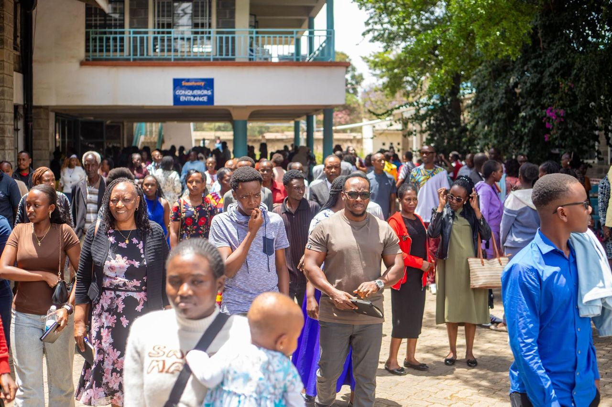

A Nakuru church with a global heart.
Life Celebration Centre (LCC) is a congregation of Deliverance Church International on General Kariba Street in Freehold, Nakuru. Led by Rev. Elijah Mwangi, LCC gathers every Sunday for two services, streams its worship online, and hosts the annual Cutting Edge Conference for believers from Nakuru and beyond.
LCC exists to reconcile people to God and equip them for ministry — to God and to people — with a transformative agenda. Its vision reaches far beyond Nakuru: Transforming Nations for Christ.
Read our story
LCC is part of Deliverance Church International, a Kenyan church family with congregations across the country. Every year since 2018 the LCC family has hosted the Cutting Edge Conference, whose goal is to “equip the saints for the work of the ministry” (Ephesians 4:12) — reaching not only the local congregation but the wider body of Christ in Nakuru and beyond through television and social media.
On Sundays the church gathers for two services that are also streamed online. Throughout the year LCC comes together for Praise Express services, nights of prayer (Kesha), leaders' summits and worship experiences for students.
Founding date and early history are being prepared with the church office and will be added once confirmed.
What to expect when you visit: heartfelt worship, prayer, a message from the Bible and time to connect with the church family.